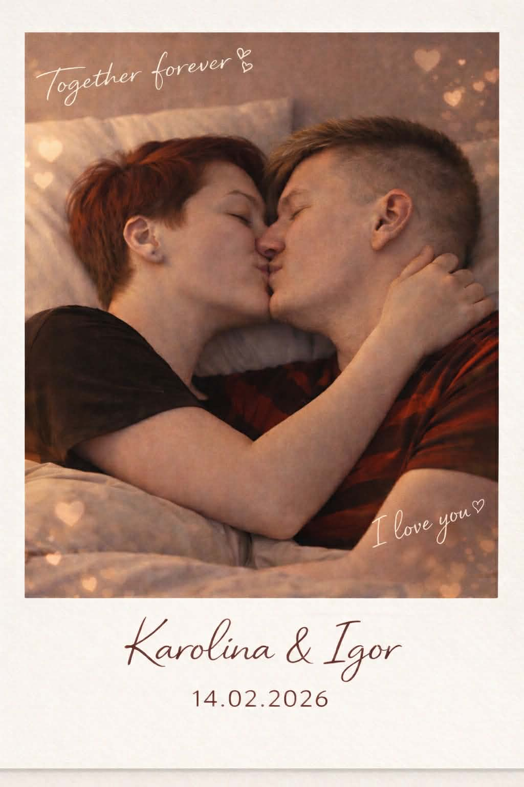

Dziś jest Twój wyjątkowy dzień,
więc niech spełni się każdy sen,
Niech uśmiech nigdy nie znika,
a szczęściu zawsze Cię dotyka.
A dziś w dniu Twojego święta,
spełnie każde Twe życzenie - zapamiętaj.💖